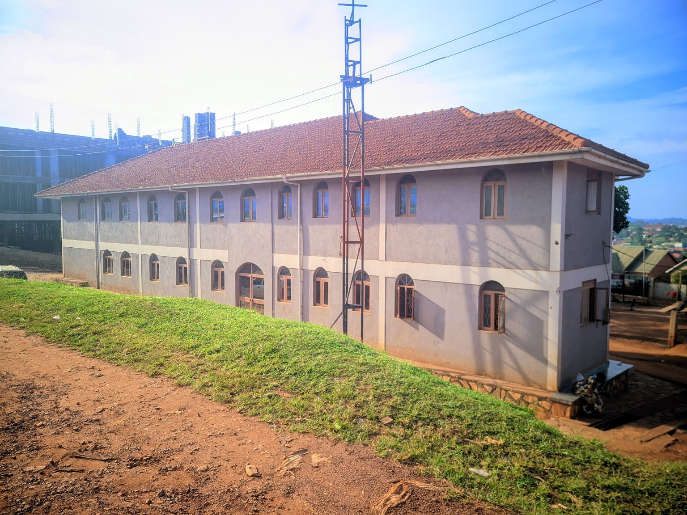

A FAMILY OF FAITH, HOPE & TRANSFORMATION.
Bulaga City Full Gospel Church exists as a welcoming community where people can worship God, grow in faith and serve others.

GOD HAS VISITED HIS PEOPLE.
The 2026 theme, “Year of God's Divine Visitation,” is anchored in Luke 7:16: “God has visited His people.”
Our desire is to create space for worship, prayer, teaching, fellowship and practical service—so that lives and communities are transformed by God's presence.
FAITH
Point people toward God through worship, Scripture, prayer and faithful living.
COMMUNITY
Build a Christ-centered family where people belong, grow and serve.
TRANSFORMATION
Celebrate changed lives and equip people to carry hope beyond the church.
SERVING TOGETHER.
Leadership names and biographies can be added here when the church provides the approved information. No leadership details are invented in this implementation.